Префектура Кагосима · Танэгасима · история и космос
Танэгасима: остров, где Япония впервые сделала аркебузу, а теперь запускает ракеты
В XVI веке на Танэгасиме впервые в Японии собрали огнестрельное оружие, а сегодня отсюда уходят в космос японские ракеты. Между этими двумя эпохами остров успел подарить стране ещё и ножницы.
Остров
Тёплый и плоский
Танэгасима лежит примерно в 40 километрах к югу от основной части префектуры Кагосима. Средняя температура года здесь 19,3 градуса, а самая высокая точка острова поднимается всего на 282 метра. На острове три муниципалитета: город Нисиноомотэ на севере и посёлки Накатанэ и Минамитанэ, живёт около 29 000 человек. Для обитаемого острова это немало, но стоит отъехать от центра любого из них, и время начинает течь по-островному медленно.
У большинства японцев название Танэгасима вызывает две ассоциации: аркебузы и космодром. Обе живут в быту островитян. В дни запусков сюда съезжаются зрители со всей страны, а светофоры и дорожные знаки на трассах подняты выше обычного, чтобы под ними прошли трейлеры с ракетами: морем их не перевезти. Летом на острове проходят ракетный фестиваль и фестиваль аркебуз, по всему острову стоят памятники и статуи в честь появления огнестрельного оружия.
Байер, впервые приехавший на Танэгасиму, признавался, что ждал только ружей и ракет, а увидел гораздо больше.
«Здесь есть история с аркебузами и есть передний край науки с космическим центром. Но есть и люди, которые заново открывают старое и повседневное: местную курицу ингии, картофельный сётю, имбирь, бананы. А ножницы танэ-басами, которые давно меня интересовали, оказались лучше, чем я мог представить»
байер, путешественник
Поклонники аниме знают Танэгасиму по фильму Макото Синкая «5 сантиметров в секунду»: многие приезжают искать места из его сцен. Сюда же перебираются жить серферы, которых держат красивое море и хорошие волны. Есть на острове и свежие морепродукты, и даже онсэн.
1543 год
Две аркебузы за целое состояние
История огнестрельного оружия в Японии началась в августе 1543 года, когда к мысу Кадокура на юге острова прибило китайское судно. Об этом рассказывает хроника «Тэппо-ки», которую написал дзэнский монах Нампо Бунси. На борту были португальцы, и у них правитель острова купил две аркебузы.
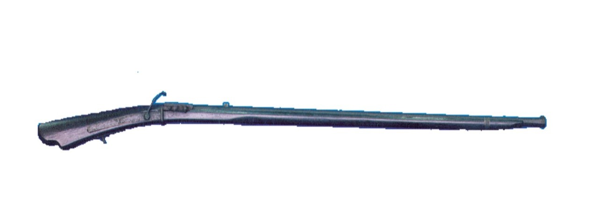
Токитака тут же собрал кузнецов, и те разобрали ружьё, чтобы сделать копию, но ни у кого ничего не вышло. Тогда за дело взялся кузнец Кимбэй Киёсада Яита, славившийся мастерством. Ему тоже пришлось нелегко, и всё же он сделал первую японскую аркебузу. В марте 1544 года к острову пристало ещё одно судно, и португальский кузнец на его борту показал Кимбэю правильный способ изготовления. После этого Кимбэй довёл ружьё до ума и за год изготовил несколько десятков стволов.
Новинка быстро разошлась по всей Японии. Шла эпоха воюющих провинций, и на поле боя меч уступал место ружью, а вместе с ним менялась и тактика.
Кузнецам Танэгасимы помогала сама природа. Остров издавна славился хорошим железистым песком, и один из пляжей Нисиноомотэ даже назвали Железным. Поэтому на острове и нашлось достаточно умелых мастеров, чтобы взяться за оружие, которого они раньше никогда не видели.
Всю эту историю подробно рассказывают в музее аркебуз в Нисиноомотэ. Его здание напоминает южноевропейский корабль, а кроме оружия здесь показывают историю, культуру и природу острова.
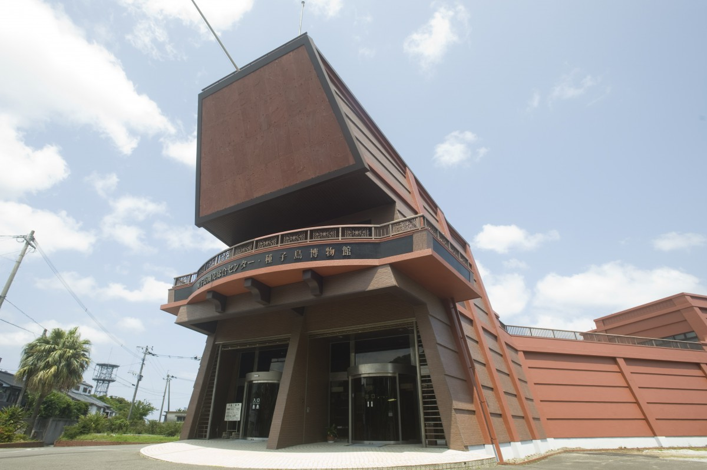
Музей аркебуз «Тэппокан» (Центр развития Танэгасимы)
- Адрес
- префектура Кагосима, Нисиноомотэ, Нисиноомотэ, 7585
- Телефон
- +81 997-23-3215
- Часы работы
- 8:30–17:00 (вход до 16:30)
- Выходные
- 25-е число каждого месяца (кроме июля и августа), новогодние праздники
- Цены / Вход
- взрослые 420 иен, старшеклассники 270 иен, школьники 130 иен
Ремесло
Ножницы от ружейных мастеров
У первой японской аркебузы был ещё один создатель: Кимбэю помогал кузнец Имабэй Макисэ. Его считают родоначальником ножниц танэ-басами, ремесла, в котором искусство оружейников дожило до наших дней. Говорят, сама форма таких ножниц пришла на остров вместе с огнестрельным оружием. До этого в Японии знали только пружинные ножницы, согнутые из одной полосы металла.
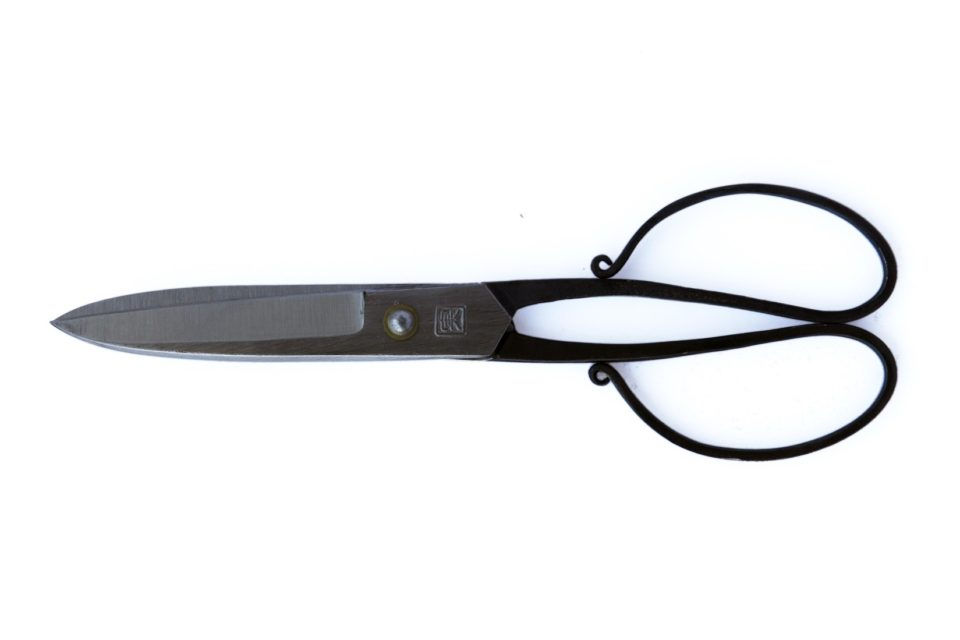
По другой версии, кузнец с того самого китайского судна 1543 года привёз «кара-басами», китайские ножницы, а местные мастера их усовершенствовали. Документов, которые это подтверждали бы, нет: история передаётся только из уст в уста.
Как бы то ни было, танэ-басами считают первыми в Японии ножницами, у которых точка опоры находится между ручками и лезвиями, то есть привычными нам ножницами крест-накрест. Ручки сделаны в старом японском стиле и симметричны, поэтому ими одинаково удобно работать и правой, и левой рукой.
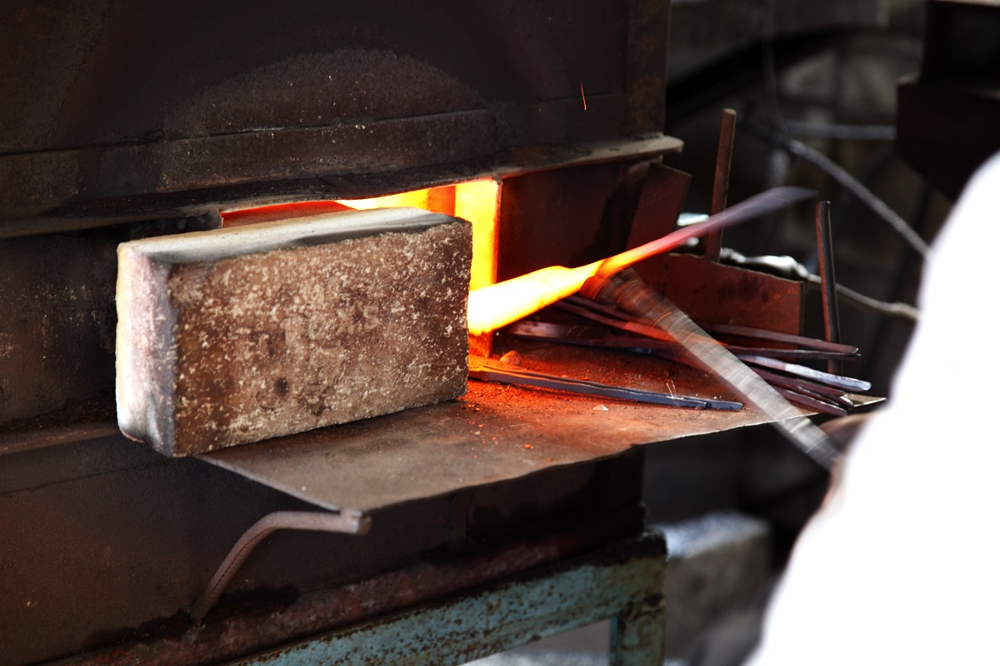
Ещё одна примета танэ-басами это круглый завиток на конце ручки, «минадзири». На следующем этапе за него цепляют заготовку, чтобы согнуть ручку по шаблону, а при шитье он не даёт ткани застревать. Всего в работе больше 30 операций. Лезвия куют по технике японского меча, и чтобы получить острые и точные ножницы, нужна большая сноровка.
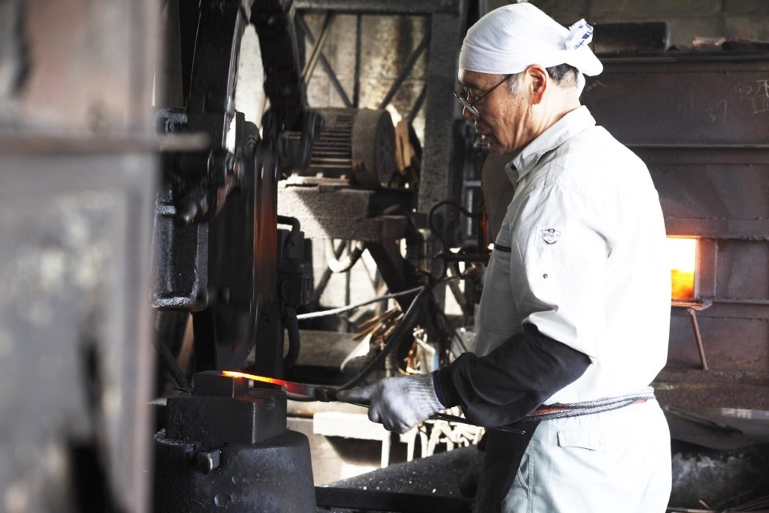
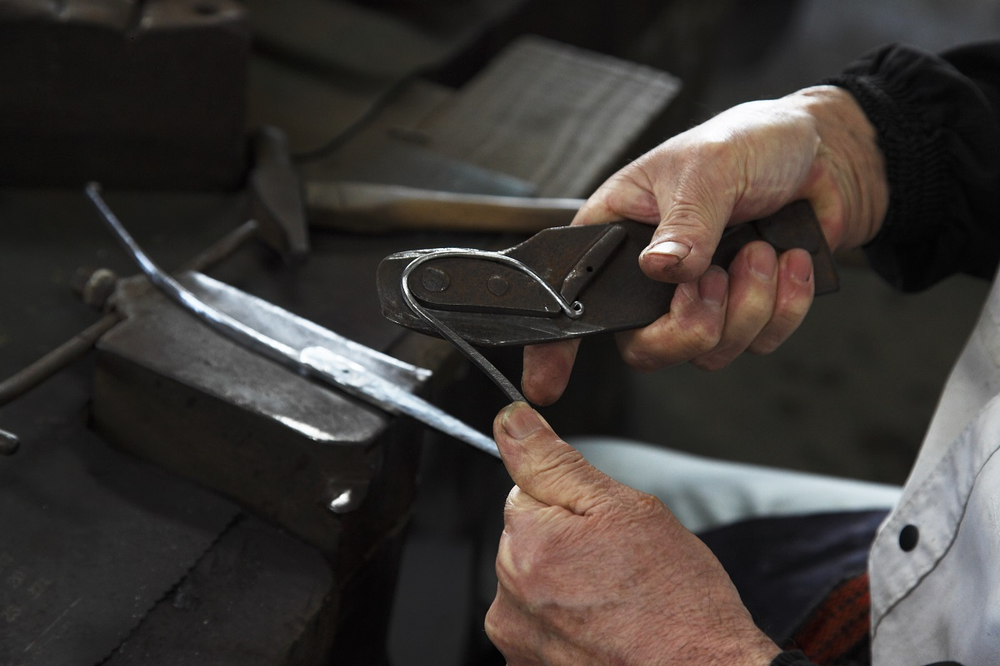
Секреты ремесла хранили потомки Имабэя Макисэ. Последний из них умер, но его ученик стал преемником, и традиционные танэ-басами по-прежнему делают на острове.
Мастерская
«Табата хамоно»
К 2019 году танэ-басами делали всего три мастерские. Одна из них «Табата хамоно сэйсакудзё»: здесь работают кузнец, его младший брат и жена. Мастерская стоит на холме, и здесь можно купить и ножницы, и кухонные ножи. Фирменная черта мастерской: ножницы, отделанные в глубокий чёрный цвет.
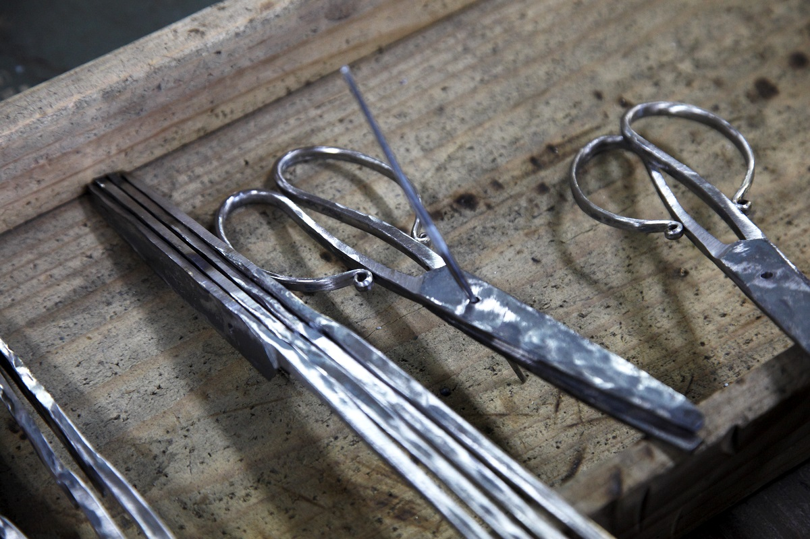
Байер долго и внимательно смотрел, как они работают, и думал о будущем ремесла.
«Дело не только в мастерстве. В ножницах, которые делает эта семья, есть их искренность. Чтобы ножницы дожили до следующих поколений, нужно рассказывать их историю и поднимать их ценность. Это вещь, традиция которой не должна прерваться»
байер, путешественник
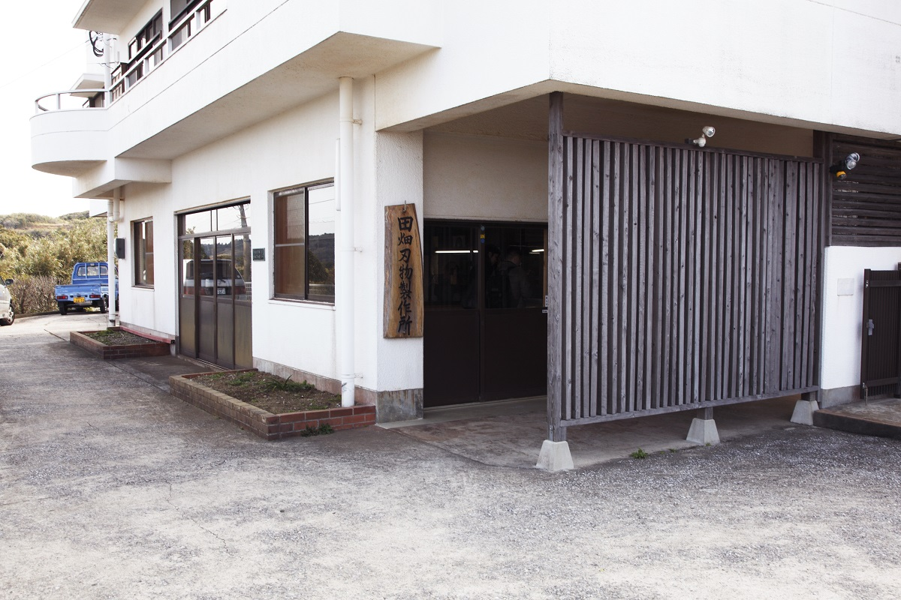
«Табата хамоно сэйсакудзё»
- Адрес
- префектура Кагосима, Нисиноомотэ, Нисиноомотэ, 14751-30
- Телефон
- +81 997-23-1240
Космос
Самый красивый космодром в мире
Космический центр Танэгасима занимает юго-восточный край острова на берегу океана. Его площадь около 9,7 млн квадратных метров, это крупнейший космодром Японии. Здесь стоят стартовый комплекс для больших ракет и корпус сборки спутников, а весь цикл работ проходит на месте: от сборки, обслуживания и проверки ракеты до запуска и слежения за ней после старта. Раз в год центр открывают для широкой публики.
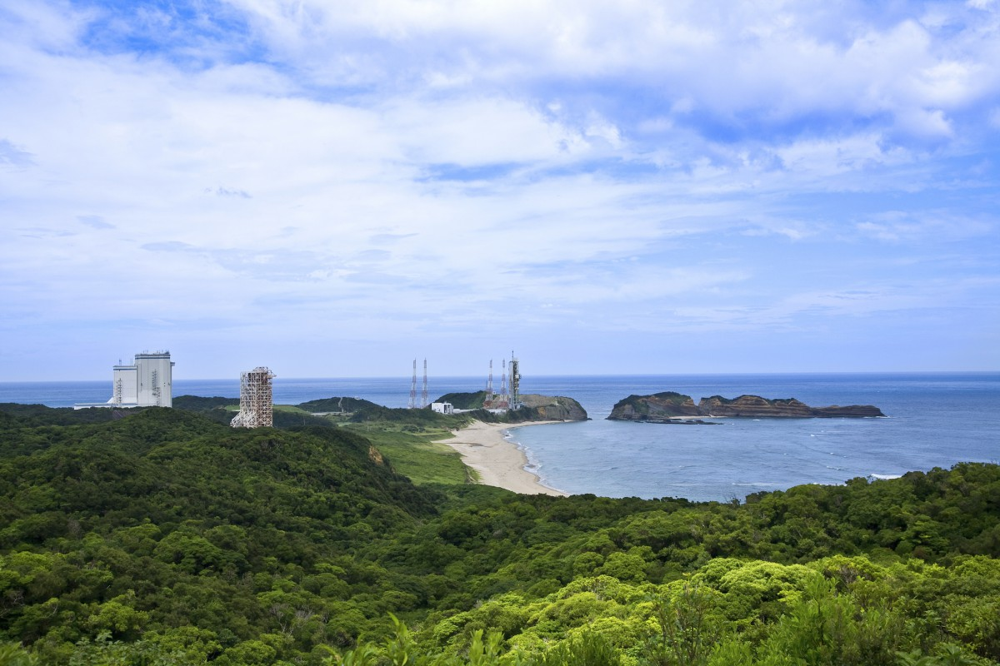
Обзор начинается в Музее космической науки и техники. На натурных моделях и в играх здесь рассказывают о спутниках, Международной космической станции, наблюдении Земли и всех японских ракетах.
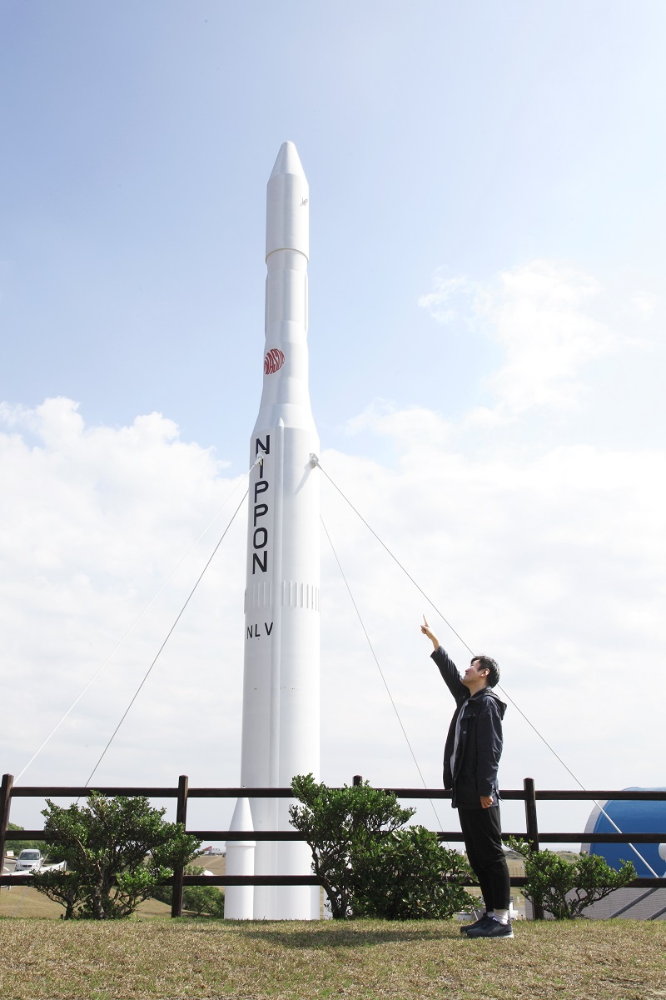
Чтобы увидеть стартовые площадки целиком, поезжайте на смотровую площадку «Ракетный холм».
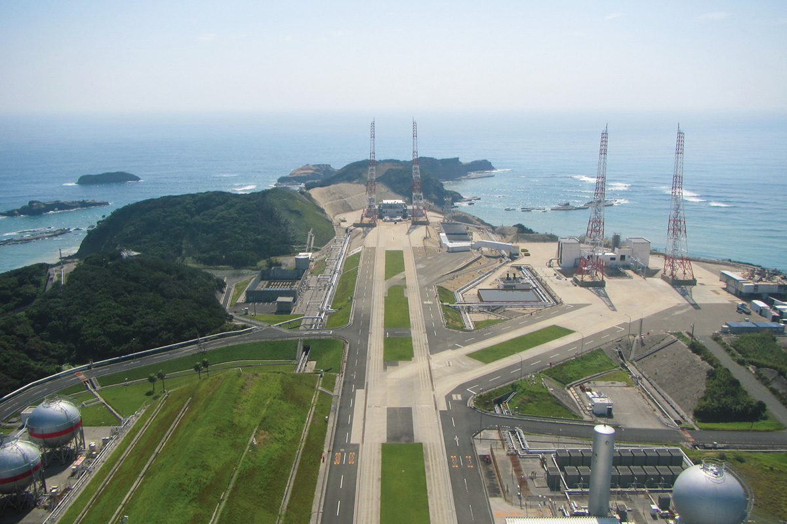
В 2022 году, когда NASA готовило программу «Артемида», чтобы впервые после «Аполлонов» снова высадить людей на Луну, Япония набирала космонавтов «поколения Артемиды» для программ исследования Луны. Японские ракеты стартуют отсюда, с острова, где когда-то сделали первую японскую аркебузу.
Космический центр Танэгасима, Музей космической науки и техники
- Адрес
- префектура Кагосима, уезд Кумагэ, Минамитанэ, Кукинага, Мацу
- Телефон
- +81 997-26-9244
- Часы работы
- 9:30–16:30
- Выходные
- понедельник (если праздник, то на следующий день; в августе только первый и пятый понедельник), новогодние праздники, возможны дополнительные выходные
- Цены / Вход
- бесплатно
- Сайт
- jaxa.jp
Фото: Мотоко Ёсида, Мидзуаки Вакахара, JAXA.